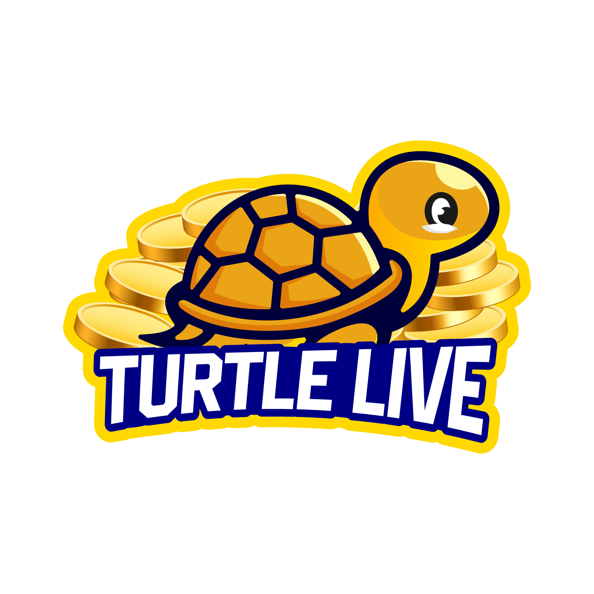

<ion-header>
  <ion-toolbar>
    <ion-title> Golden Turtle - Hong Kong </ion-title>
    
  </ion-toolbar>
</ion-header>

<ion-content>
  <ion-list class="setting-list">
    <ion-list-header> App Setting </ion-list-header>

    <ion-item class="setting-item" detail button lines="inset" [routerLink]="['/aboutus']">
      <ion-label> About Us </ion-label>
      <ion-icon name="help-circle-outline" size="large" slot="start"></ion-icon>
    </ion-item>

    <ion-item class="setting-item" detail button lines="inset" href="http://dashboard.goldenturtle.co/demo_v_1_0_2.apk">
      <ion-label > Download </ion-label>
      <ion-icon name="cloud-download-outline" size="large" slot="start"></ion-icon>
    </ion-item>

    <ion-item class="setting-item" lines="inset">
      <ion-label> {{ appInfo.name }} - v_{{ appInfo.v_code }} </ion-label>
      <ion-icon name="logo-android" size="large" slot="start"></ion-icon>
    </ion-item>

  </ion-list>
  
  <!-- <ion-item detail button (click)="openRate()">
    <ion-label>  App Rate </ion-label>
  </ion-item>

  <ion-item detail button (click)="appDownload()">
    <ion-label>  Download App </ion-label>
  </ion-item> -->

  <!-- <ion-item detail button (click)="openCrashReport()">
    <ion-label>  Crash Report </ion-label>
  </ion-item> -->
</ion-content>
<!-- 
<ion-modal trigger="open-about-us-modal" (willDismiss)="cancel()">
  <ng-template>
    <ion-header>
      <ion-toolbar>
        <ion-title> About Us </ion-title>

        <ion-buttons slot="end">
          <ion-button (click)="cancel()">Cancel</ion-button>
        </ion-buttons>
      </ion-toolbar>
    </ion-header>

    <ion-content class="ion-padding">
      <p> 
        Turtel live application is an application that provide display 2D result and value of bitcoin and
        Ethereum coin exchange rate.
      </p>
        

      <p> Currency rate for BTC and ETC are displayed in hong kong (HKD) </p>
        
      <p>
        The original website is referenced by coinbase (www.coinbase.com) and also displayed without
        and direct change, so you can watch this BTC and ETC values on the original website.
      </p>

      <p>
        Turtle Live Application will display (5) times 2D result, BTC and ETC
        exchange value. you can be used quickly and easily and you can also view and
        search record of previous days.
      </p>
      
      <p> We're closed on every Monday.</p>
    </ion-content>
  </ng-template>
</ion-modal> -->
